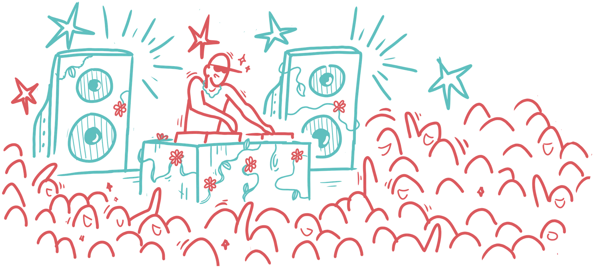
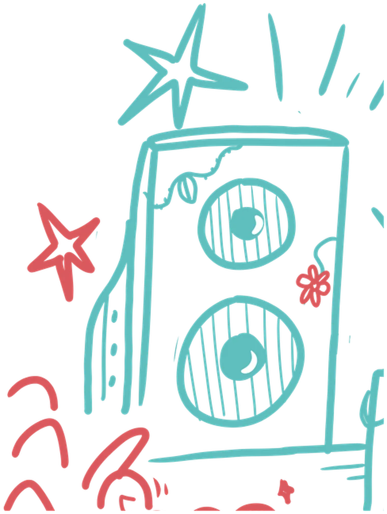
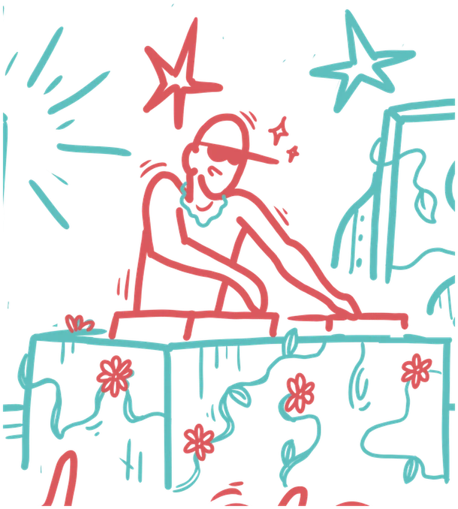
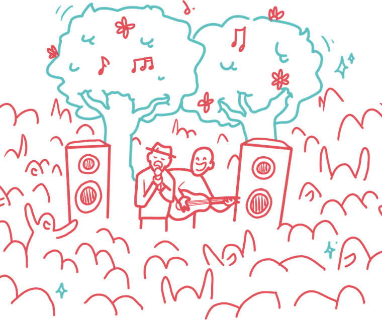
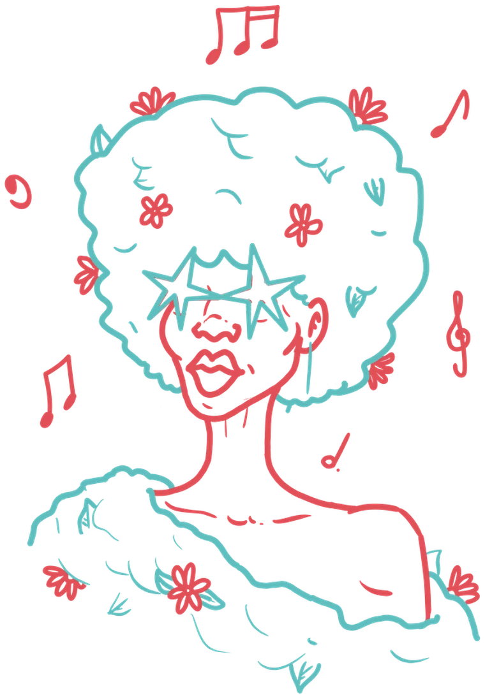

Huella de carbono del festival
ISO · GHG ProtocolEdición
Calculamos el impacto ambiental de tu festival, te ayudamos a reducirlo y dejamos los datos listos para que cualquier marca o administración pueda comprobarlos.

Soinu gehio, kalte gutxioMás sonido, menos daño
ISOGHG ProtocolCon
Lo que cuentes de tu festival tendrá que poder demostrarse.
de las afirmaciones ecológicas en la UE son vagas, engañosas o infundadas, según la Comisión Europea.
del total ni siquiera presenta una prueba que las respalde.
Con datos propios, la exigencia se convierte en argumento.
La Directiva (UE) 2024/825 ya está en vigor. Prohíbe las afirmaciones ambientales genéricas que no se apoyen en datos reales y verificables.
También en EspañaLa Ley 7/2022 y el Real Decreto 1055/2022 piden menos plástico de un solo uso, recogida selectiva obligatoria y gestión circular en barras y recintos.
Antes de que empiece la edición, calculamos qué huella tendrá y cuánto CO2 evitaría cada medida que estés valorando.
Lo que ganasPlanificas la edición con criterios de eficiencia desde el principio, con una estimación delante.

Calculamos la huella de carbono del festival con la norma ISO y el GHG Protocol. Tu equipo nos pasa facturas y tickets; la plataforma de Creast, con inteligencia artificial, hace el resto.
Lo que ganasSabes dónde se te va la energía, el agua y los residuos.

Con los números delante vemos dónde recortar consumo de energía y de agua y generación de residuos, y qué medida compensa más.
Las emisiones que no se pueden evitar se compensan con proyectos de reforestación, y así se comunican: como compensación, nunca como un impacto que ha desaparecido.
Lo que ganasMenos energía, menos residuos y menos logística desperdiciada. La diferencia se nota en el presupuesto.

Convertimos los resultados en comunicación: mensajes claros, apoyados en datos reales, para que tu público confíe y las marcas y administraciones puedan comprobarlo.
Lo que ganasAcceso a marcas con objetivos ESG y a ayudas públicas que priorizan el impacto medido, y una reputación apoyada en resultados.

El resultado no es una promesa, es un documento. Está ordenado para que un patrocinador o una administración encuentre enseguida lo que necesita saber.
Maqueta orientativa de la estructura. No contiene datos reales.
Unimos estrategia ambiental y comunicación y adaptamos cada proyecto a la organización que lo encarga. Para el análisis de datos trabajamos con la tecnología de Creast.
Cuéntanos qué evento organizas y cuándo es la próxima edición. Te proponemos una primera reunión para ver cuánto se puede bajar.
El mínimo. Reuniréis facturas y tickets y nos los enviaréis. El cálculo, el análisis y el informe corren de nuestra parte.
La norma ISO y el GHG Protocol, a través de la plataforma de Creast.
Sí. Antes de la edición prevemos la huella y estimamos cuánto CO2 evita cada acción que estés valorando.
Está pensado para eso. El informe ESG y el dossier de patrocinio reúnen las pruebas que piden las marcas con presupuesto ESG y las líneas públicas de ayuda.
Se compensan con proyectos de reforestación. En la comunicación aparecen como compensación, nunca como un impacto que ha desaparecido.
Con cifras reales detrás de cada mensaje y sin frases genéricas, que la Directiva (UE) 2024/825 ya no admite. Definimos contigo qué contar y con qué tono.